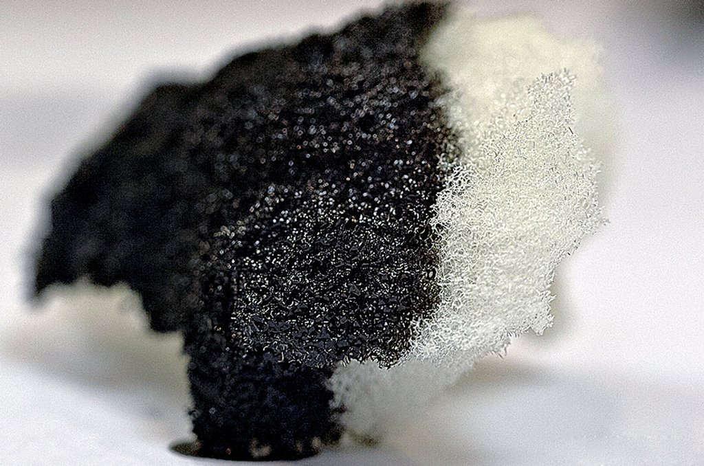

Sorbents are used to remove various substances from solutions. Investigate how the properties of a sorbent and environmental conditions affect the binding efficiency of substances. Determine the efficiency of various sorbents and identify the primary regularities of these processes.

Today, humanity faces numerous environmental challenges, such as oil spills, soil contamination, gas emissions, and water pollution. These issues frequently lead to allergies, poisoning, infections, and other health-threatening conditions. However, there are substances in the world capable of addressing all these problems, and they are known as sorbents. Sorbents are substances that absorb gases, vapors, or dissolved substances from the environment through the process of sorption. They are classified into adsorbents, absorbents, chemosorbents, ion exchangers, and complexing sorbents. To better understand how different sorbents work, it is necessary to examine the types of sorption processes. Physical adsorption, or physisorption, involves molecules being held on the surface of a sorbent by weak intermolecular Van der Waals forces. Since no chemical bonds are formed, this process is typically reversible. Van der Waals forces are weak intermolecular interactions divided into three types. London dispersion forces arise in all atoms and molecules due to the chaotic movement of electrons, which can momentarily shift electron density to create an instantaneous dipole. This dipole lasts for a fraction of a second before shifting elsewhere. Orientational forces, or Keesom forces, occur between polar molecules with permanent dipoles, where the oppositely charged ends of the molecules align with each other. Induction forces, or Debye forces, develop between a polar and a non-polar molecule when the permanent dipole of the polar molecule deforms the electron cloud of the non-polar one, inducing a temporary dipole. London forces are always present, but they can be supplemented by Debye and Keesom forces, making physical adsorption possible. For instance, in a system containing activated carbon and water, water molecules possess a permanent dipole, whereas the carbon atoms do not. Debye and London forces operate between them as the polar water molecule induces a dipole in the carbon electron cloud, allowing the water to be held on the surface. Other mechanisms include chemosorption, or chemical adsorption, which relies on the formation of strong chemical bonds between the substance and the sorbent surface. Unlike physisorption, these bonds are significantly stronger, making the process mostly irreversible. Absorption involves the uptake of a substance throughout the entire volume of the sorbent, meaning that molecules penetrate deep inside the material. Ion exchange functions by replacing certain ions with others, such as when heavy metal ions from a solution substitute sodium or calcium ions within the sorbent structure. Complexation relies on forming stable complexes between the functional groups of the sorbent and metal ions. This mechanism stands out for its high selectivity, allowing the efficient extraction of specific metals even at very low concentrations using functional groups such as carboxyl, amine, thiol, and phosphonic groups. Beyond their specific mechanisms, the physicochemical properties of sorbents play a vital role in determining their efficiency under various conditions. The primary properties include high specific surface area and porosity, which dictate how much substance a sorbent can hold. Selectivity determines the ability to capture specific target substances preferentially. Hydrophobicity and hydrophilicity dictate how effectively a sorbent functions in water environments. Sorbents also require regenerability for recovery and reuse, chemical stability against acids, bases, or high temperatures, and non-flammability for safety when handling combustible materials. Furthermore, buoyancy is essential for clearing oil spills from water surfaces, low water capacity ensures that excess water does not displace the target substance, and mechanical strength prevents destruction during use and transport. The process of sorption can be viewed as a heterogeneous equilibrium between the sorbate in the environment and the sorbent itself. Consequently, it is influenced by almost all major factors that govern chemical reaction rates and chemical equilibrium. Temperature increases the rate of sorption according to the Van 't Hoff rule; however, because physical adsorption is an exothermic process, an increase in temperature simultaneously shifts the equilibrium toward the endothermic reverse reaction according to the Le Chatelier principle, thereby reducing the overall adsorption efficiency. A higher concentration of the sorbate increases the reaction rate, as does a larger specific surface area and porosity of the sorbent. The rate of mass transfer to the surface, determined by mixing or flow speed, affects external diffusion, meaning better agitation accelerates sorption. Additionally, the pH of the medium can alter the charge of the components or cause competition for binding sites, humidity can block free pores, and increased pressure shifts the reaction equilibrium toward a smaller volume when dealing with gases. Practical research involves conducting experiments to test how sorbents perform in water under different conditions, such as varying the amount of sorbent and adjusting the temperature. A key area of development is creating environmentally friendly composite sorbents, such as those made from eggshells and saxaul, designed with enhanced mechanical strength. Ultimately, sorbents are indispensable across many fields. In medicine, they are widely used for detoxification during poisoning, allergies, and intestinal infections, helping to reduce the metabolic load on the liver and kidneys. In ecology and industry, they are critical for responding to oil spills, as well as purifying wastewater, contaminated soil, and industrial air emissions. In everyday life, they function effectively in water filters, hygiene products, food packaging, and cosmetics.